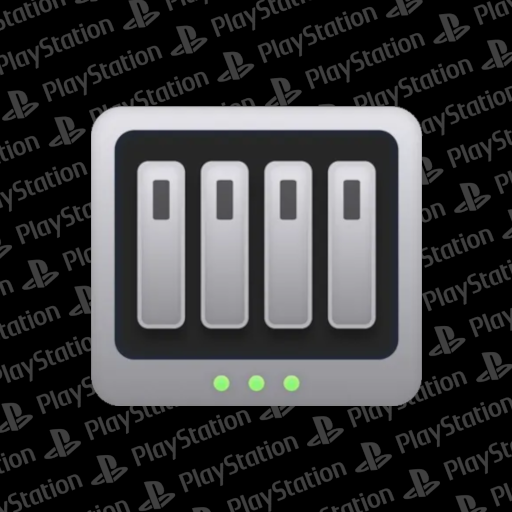

Jailbreak-Section
| PS-Tools Für Android | |
| Minimalistische Android-App, in der aktuell ein Payload-Sender und eine Web-Link-Datenbank enthalten ist. Wird regelmässig aktualisiert... | |
| Download |
PS4 
| CSS-Font-Face Exploit | |
| Webkit-Jailbreak für die PS4. Funktioniert bis 11.20. | |
| Link |
PS5 
⚠ Updates ausschalten und WLAN manuell einrichten. DNS 1: 127.0.0.1 - DNS 2: 0.0.0.0
| MB Y2JB Update | |
|
Basis für diesen Autoloader ist der Y2JB Autoloader von itsPLK. Die File muss als "y2jb_update.zip" auf den Root_Folder eines USB-Sticks mit exFat gelegt werden. Mit dem Ausführen des Y2JB wird der Autoloader geupdated.
Ausserdem enthalten: Autostart von MB NanoDNS (ermöglicht Internetzugang) und MB PayloadManager (mit aktivierter Zusatz-Repo können alle MB-Tools geladen werden). Icons und Backgrounds werden installiert. Keine Konfiguration von autoload.txt mehr erforderlich. | |
| Download | |
| Link |
| MB Y2JB Update-Creator | |
| In dieser Zip-File sind Scripte für Windows und MacOS enthalten. Die Dateigrössen für alle Anpassungen im y2jb_update-Folder werden beim Packen eines neuen Archivs aktualisiert. | |
| Download |
| MB Jailbreak Countdown | |
| Mini-PKG, das eine snd0.at9 mit einem Jailbreak Countdown hat. Läuft knapp 30 Sekunden und startet bei Ausführung den Youtube-Jailbreak. | |
| Download |
| MB Homebrew Launcher | |
| Re-Packed FAKE00000. Neues Logo und Hintergrund. Die App wird nicht mehr in Games sondern in Medien angezeigt. Falls der Homebrew Launcher bereits installiert ist, einfach deinstallieren und die MB-App installieren. | |
| Download |
 |
MB NAS |
|
Quelle ist der EZ-Remote-Client. Re-Designed Launcher. Nach Start den Browser schließen, dann läuft die App Full-Screen. Pfad-Links funktionieren nur mit Freigabeordnern.
Beispiel: smb://IP/Freigabeordner | |
| Download |